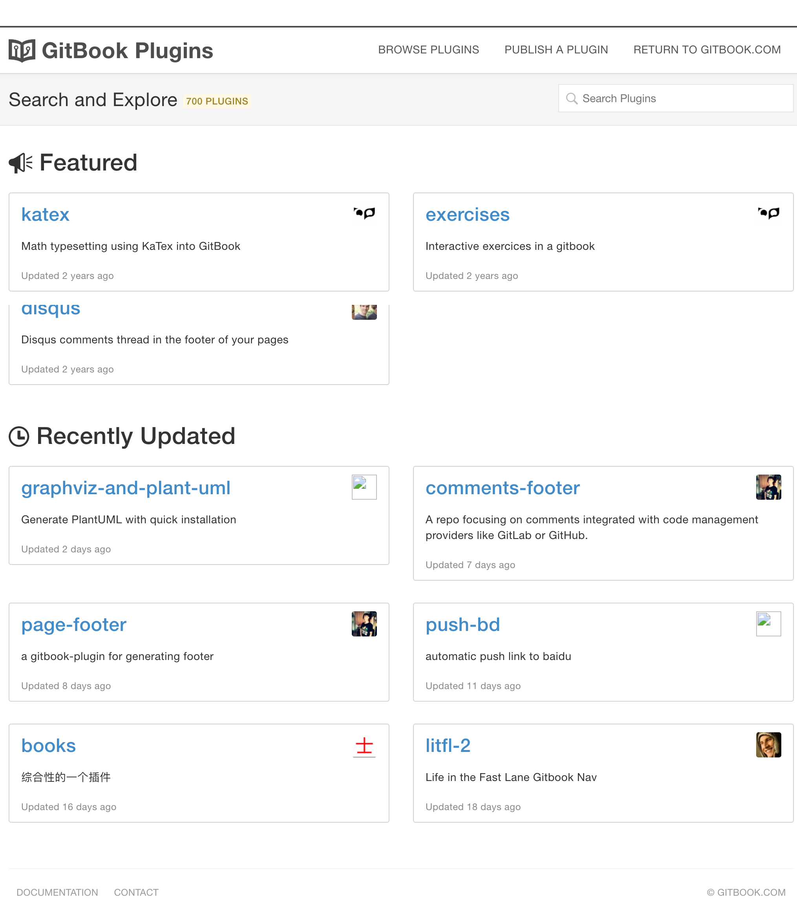
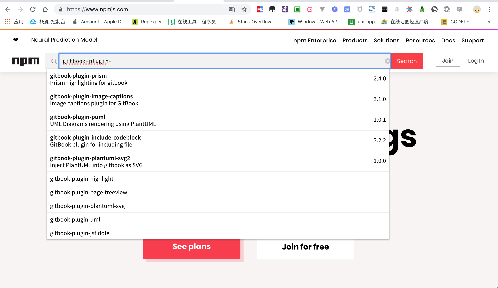

1. 插件介绍
插件是 gitbook 的扩展功能,很多炫酷有用的功能都是通过插件完成的,其中插件有官方插件和第三方插件之分.
推荐官方插件市场 https://plugins.gitbook.com/ 寻找或下载相应的插件.

当然也可以去 npm 市场搜索 gitbook 插件,根据 gitbook 插件规范, gitbook-plugin-<name> 是功能插件,gitbook-theme-<name> 是主体插件.
如果没有按照规范命名,还是直接百度搜索吧!

1.1. npm 安装后再 gitbook 安装
语法格式:
npm install gitbook-plugin-<name>
- 安装到本地:
npm install gitbook-plugin-advanced-emoji - 激活安装插件: 配置
book.json中plugins节点 - 安装到项目:
gitbook install - 启动并测试测试:
gitbook serve
示例:
# 安装 gitbook-plugin-advanced-emoji 插件
$ npm install gitbook-plugin-advanced-emoji
# 安装 gitbook-plugin-advanced-emoji 插件
$ gitbook install
npm安装速度慢的话,可以使用cnpm加速安装(npm install cnpm),表情插件下载地址 Advanced Emoji
1.2. gitbook 直接安装
语法格式:
gitbook install
- 激活安装插件: 配置
book.json中plugins节点 - 安装到项目:
gitbook install - 启动并测试测试:
gitbook serve
示例:
# 安装 gitbook-plugin-advanced-emoji 插件
$ gitbook install
表情插件下载地址 Advanced Emoji
1.3. 插件示例
book.json 配置文件:
"plugins": [
"advanced-emoji"
]
安装插件:
$ gitbook install
使用示例:
:bowtie:
:laughing:
:relaxed: